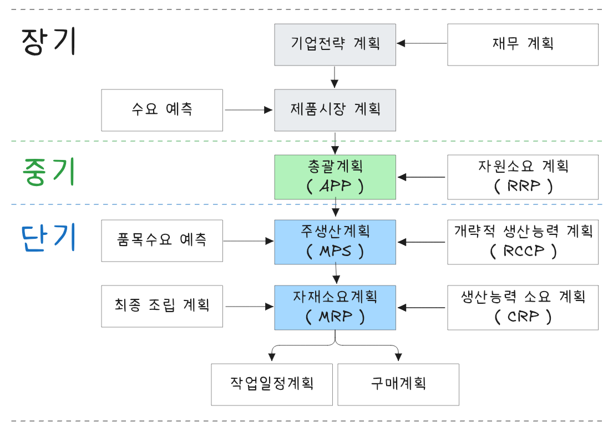

flowchart LR 00[총괄생산계획 전략] subgraph s01[공급능력에 의한 전략] direction LR 01[공급능력에 의한 전략] 10[추종 전략] 20[평준화 전략] 30[혼합 전략] 10 --- 101["고용수준 변동 전략"] & 102["생산율 변동 전략"] 20 --- 201["재고수준 변동 전략"] end subgraph s02[수요변동에 의한 전략] direction LR 02[수요변동에 의한 전략] 21[가격 조정] 22[광고에 의한 수요조정] 23[추후 납품을 통한 수요조정] 24[새로운 수요 창출] end 01 --- 10 & 20 & 30 02 --- 21 & 22 & 23 & 24 00 --- 01 & 02
생산계획 수립
Abstract
생산계획은 총괄생산계획, 기준일정계획, 자재소요계획을 수요예측, 생산능력 및 자원 수준, 재고 수준을 고려하여 장기, 중기, 단기별로 수립한다.
Keywords
생산계획, APP, MPS, MRP, RRP, RCCP, CRP
생산 계획 구조

생산계획은 장기, 중기, 단기 계획으로 수립한다.
- 장기계획(2년 이상)
기업전략 계획, 제품 시장 계획, 재무계획(공장입지, 생산능력계획, 설비투자계획, 사세 확장) 등 - 중기계획(6개월 ~ 2년)
총괄계획, 인력계획, 자재계획, 외주계획 - 단기계획(6개월 이내)
생산계획(분기, 월별, 주별, 일별 예측)
※ 생산계획 관련 주요 용어
- 총괄생산계획(APP), aggregate production planning
- RRP, resource requirements planning
- 기준일정계획(MPS), master production schedule
- RCCP, rough cut capability planning
- 자재소요계획(MRP), material requirements planning
- CRP, capacity requirements planning
일정계획
일정계획(scheduling)이란 생산계획 내지 제조명령을 시간적으로 구체화 하는 과정이다. 생산자원을 합리적으로 이용하여 생산할 품목과 생산량을 예정된 시간에 생산할 수 있도록 계획하고 통제하는 것이다.

일정계획 종류
- 대 일정계획(master scheduling)
기준일정계획이라고도 하며 수주에서 출하까지 일정계획을 말함 - 중 일정계획(operating scheduling)
대 일정계획을 토대로 공정 개시일과 완료일을 작성 - 소 일정계획(detail scheduling)
세부일정계획으로 작업자, 기계별 일정계획을 말함
일정계획 주요 목적은 납기 준수와 자원 효율화에 있다.
| 목적 | 설명 |
|---|---|
| 납기 준수 | 고객 요구 납기에 맞춰 제품을 적시에 제공 |
| 자원 효율화 | 기계 및 작업자의 유휴 시간 최소화 |
| 재공품 최소화 | 작업 간 대기시간을 줄여 공정 흐름 원활화 |
| 생산 리드타임 단축 | 총 생산 소요시간 단축 |
| 공정 간 균형화 | 특정 작업장이나 공정에 부하가 몰리지 않도록 분산 |
일정계획을 구조적으로 계층화하면 총괄생산계획, 주생산계획, 작업할당, 작업배정, 작업순서결정, 그리고 작업 지시 순으로 나열된다.
| 수준 | 계획명 | 설명 |
|---|---|---|
| 1단계 | 총괄생산계획 (Aggregate Planning) | 월 단위로 제품군 수준의 생산량 및 자원계획 수립 |
| 2단계 | 주생산계획 (Master Production Schedule, MPS) | 주 단위로 제품별 생산 시기 및 수량 결정 |
| 3단계 | 작업할당 (Job Allocation) | 작업을 어느 공정이나 설비 그룹에 배치할지 결정 |
| 4단계 | 작업배정 (Job Assignment) | 작업장 내 세부 작업자/설비에 작업을 배분 |
| 5단계 | 작업순서결정 (Sequencing) | 각 작업장 내 작업의 실행 순서 결정 |
| 6단계 | 작업지시 (Dispatching) | 실제 작업 실행에 대한 지시 및 통제 |
일정계획에는 할당, 배정, 순서, 작업지시 등과 같은 주요 개념이 있다.
| 구분 | 설명 | 예시 |
|---|---|---|
| 할당 (Allocation) | 어떤 작업을 어떤 작업장/설비 그룹에 보낼 것인가 | A작업은 조립라인 1에 할당 |
| 배정 (Assignment) | 할당된 작업을 어떤 개별 기계나 작업자에게 어떻게 배정할 것인가 | 라인 1의 작업자 김 씨에게 오전에 A작업 배정 |
| Sequencing | 같은 작업장에서 작업의 수행 순서를 정하는 것 | A → B → C 순으로 작업 |
| Dispatching | 작업 지시를 실제로 실행하는 것 | 김 씨, 지금 A작업 시작하세요 |
일정계획 주요 기법에는 정적 스케쥴링, 동적 스케쥴링, 휴리스틱 그리고 최적화 기법 등이 있다.
| 구분 | 기법명 | 설명 |
|---|---|---|
| 정적 스케줄링 | Gantt 차트, 작업순서표 | 미리 고정된 계획에 따라 일정 작성 |
| 동적 스케줄링 | 우선순위 규칙 (SPT, LPT, EDD 등) | 작업 상황에 따라 실시간 우선순위 결정 |
| 휴리스틱 기법 | SPT(최단처리시간우선), EDD(납기우선) 등 | 단순 규칙 기반의 일정 결정 방식 |
| 최적화 기법 | 선형계획법, 시뮬레이션, 제약이론(TOC) | 수학적 모델 기반 최적 해 도출 |
일정계획 관리를 위한 핵심성과 지표(KPI)로 납기 준수율, 기계 가동률, 평균 리드타임, WIP 수준, 대기시간 등이 있다.
| 지표 | 설명 |
|---|---|
| 납기준수율 (OTD) | 정해진 납기 내에 출하된 비율 |
| 기계가동률 | 설비의 실제 가동시간 대비 가능한 가동시간 |
| 평균 리드타임 | 생산 시작부터 완료까지 소요 시간 |
| WIP 수준 | 생산 중인 재공품 수량 |
| 대기시간 | 작업 간 대기 발생 시간의 총합 |
생산계획 주요 시나리오는 다음과 같다.
| 단계 | 작업 내용 |
|---|---|
| 생산계획 | A제품 500개, B제품 300개 생산 필요 |
| 작업 할당 | A제품 → 1조 라인, B제품 → 2조 라인 |
| 작업 배정 | 1조 라인의 기계 M1: A제품 오전 생산1조 라인의 기계 M2: A제품 오후 생산 |
| Sequencing | M1: A1 → A2 → A3 순서로 작업 |
| Dispatching | M1 작업자에게 A1 작업 즉시 지시 |
일정계획에 있어 기준일정을 다음과 같이 정의할 수 있다.
- 작업시간 + 준비작업시간 + 여유시간 + 정체시간
공정관리 기능
공정관리는 크게 계획기능과 통제기능으로 구분할 수 있다.
| 계획 기능 | 통제 기능 |
|---|---|
| 공정계획(순서계획) | 작업지시(우선순위 통제) |
| 공수계획(능력소요계획) | 능력관리 |
| 일정계획 | 진도관리 |
계획 기능
계획기능을 요약/정리하면 다음과 같다.
| 항목 | Routing | Loading | Scheduling |
|---|---|---|---|
| 정의 | 공정 흐름 결정 | 설비별 작업 분배 | 작업 시간 결정 |
| 중심 개념 | “어디서 어떤 순서로” | “어디에 얼마나” | “언제” |
| 주요 목적 | 흐름 최적화 | 자원 활용 최적화 | 시간 효율화, 납기 준수 |
| 적용 도구 | 공정도, 작업지시서 | 부하 차트, 자원표 | Gantt 차트, 우선순위 규칙 |
공정계획(routing)
작업계시에 앞서 능률적이고 경제적인 작업절차를 결정하기 위한 것(작업방법과 순서가 정해짐)공수계획(작업부하할당, loading)
생산계획량을 완성하는데 필요한 인원이나 기계 부하를 결정하게 됨일정계획(scheduling)
작업순서와 방법이 결정되고(절차계획), 생산량이 공수로 환산되면(공수계획), 작업 시작시간과 종료시간을 결정하는 과정
통제 기능
통제기능을 요약/정리하면 다음과 같다.
| 항목 | 정의 | 주요 활동 |
|---|---|---|
| Dispatching | 작업을 실제로 지시하고 개시 | 작업지시서 발행, 자재/설비 준비 |
| Capacity Control | 설비와 인력의 가용 능력 점검 및 조정 | 가동률 분석, 부하조절 |
| Expediting (Follow-up) | 계획대로 진척 중인지 점검하고 문제 조정 | 납기 추적, 병목관리, 현장 피드백 |
작업지시(dispatching)
절차계획과 일정계획표에 따라서 생산을 개시하도록 허락능력관리(capacity control)
통제단계에서 실제 능력과 부하를 조사하여 양자 균형을 이루도록 조정진도관리(expedition or follow up)
작업배정(작업지시)에 의해 작업 진도상황이나 과정을 수량적으로 관리하는 것
총괄생산계획(APP)
총괄생산계획(APP, aggregate production planning)은 중기 수요에 대응하여 산출물 공급을 계획하는 것으로 중기적으로 기업 전반적인 생산수준, 재고수준, 고용수준 등을 설정한다.
- 총괄계획 대상 기간은 6개월에서 2년 수준이며 평균적으로 1년(12개월) 단위로 중기계획 수립
- 수요 충족을 위해 생산설비는 생산능력 범위 내에서 이뤄져야 하고 사업전략에 대한 관련 비용이 최소가 되도록 수립
총괄생산계획 주요 목표는 다음과 같다.
- 이익극대화
- 생산비용 최소화
- 재고수준 최소화
- 고객서비스 최적화
- 생산율 변동 극소화
- 작업자 수준 변동 극소화
- 잔업 및 하청 최소화
- 시설 및 설비 이용률 최대화
총괄생산계획 전략적 대안은 상황에 따라 능동적 또는 수동적으로 수립할 수 있다.
| 능동적 대안 | 수동적 대안 |
|---|---|
| 수요 이동 촉진 | 재고 수준 변경 |
| 수요 지연 촉진 | 작업자 수준 변경 |
| 보완적 제품 개발 | 생산율 변경 |
| 시간제 작업자 활용 |
총괄생산계획 수립에 있어 입력과 산출은 다음과 같다.
| 입력 (Input) | 산출 (Output) |
|---|---|
| 시장 수요, 상황 | 재고 수준 |
| 제도 및 법규 | 인력 수준 (고용/해고) |
| 경쟁업체 정보 | 정규 및 잔업/특근 시간 |
| 기술 변화 (Method) | 하청 생산량 |
| 인력 수급 (Man) | 기타 생산 계획 |
| 설비 능력 (Machine) | |
| 재고 수준 (Material) | |
| 기타 생산 관련 정보 |
총괄과 분해
총괄생산계획은 생산 계획을 수립하는 과정에서 중요한 두 가지 접근 방식인 총괄(Aggregation)과 분해(Disaggregation)를 사용한다. 각 접근 방식은 생산 계획을 어떻게 수립할지에 대한 전략적 차이를 나타내며, 생산 계획의 효율성과 유연성에 큰 영향을 미친다.
총괄(Aggregation)
총괄 목적은 전체 제품군을 대상으로 생산 계획을 세우고, 이를 보다 단순화하여 자원의 배분을 효율적으로 할 수 있도록 한다. 총괄은 제품군을 전체적으로 묶어서 계획을 수립하는 접근 방식이다. 개별 제품의 세부적인 수요 예측을 제외하고, 전체적인 생산량을 고려하여 자원 배분을 한다. 예를 들어, 여러 종류의 제품을 하나의 큰 그룹으로 묶어 생산 계획을 세우고, 이를 통해 자원을 배분하거나 생산능력을 설정한다.
| 장점 | 단점 |
|---|---|
| 세부적인 제품 수요 예측이 필요 없으므로 계획이 간단하다 | 개별 제품의 수요를 반영하지 못해 일부 제품군의 수요 변동에 유연하게 대응하기 어렵다 |
| 생산 자원을 효율적으로 관리할 수 있다 | 제품별 우선순위 설정이 어려울 수 있다 |
| 전반적인 생산 효율성 향상 |
분해(Disaggregation)
분해 목적은 총괄 계획을 세부적인 생산 계획으로 변환하고, 각 제품에 대해 구체적인 생산량을 설정하여 세밀한 자원 배분을 한다. 분해는 총괄생산계획에서 설정한 목표나 계획을 개별 제품에 맞게 세분화하여 구체적인 생산 계획을 수립하는 방식이다. 각 제품군이나 제품별로 수요 예측을 반영하여 생산 계획을 세운다.
| 장점 | 단점 |
|---|---|
| 각 제품에 대한 세부적인 수요 예측을 반영하므로 보다 정교한 생산 계획이 가능하다 | 계획이 복잡하고 시간이 많이 소요된다 |
| 개별 제품의 생산 우선순위와 자원 배분을 명확히 할 수 있다 | 자원의 배분이 세부적으로 이루어져 관리가 어려울 수 있다 |
총괄과 분해의 관계
- 총괄(Aggregation)은 넓은 범위에서 생산 계획을 설정하며, 분해(Disaggregation)는 이 계획을 세부적으로 나누어 각 제품군별로 구체적인 실행 계획을 수립한다.
- 총괄은 생산 계획의 기본적인 틀을 제공하고, 분해는 그 틀을 실제 상황에 맞게 실행 가능하도록 변환한다.
총괄
- 회사는 전체적으로 1,000대의 자동차를 생산할 계획을 세운다. 이때, 총괄생산계획은 1,000대를 생산하는 목표를 설정한다.
분해
- 자동차를 3가지 모델(A, B, C)로 나누어 각각의 수요를 예측하고, 각 모델별로 생산 계획을 세운다. 예를 들어, 모델 A는 400대, 모델 B는 500대, 모델 C는 100대로 분해할 수 있다.
총괄(Aggregation)은 대규모의 생산 계획을 간단히 설정하는 반면, 분해(Disaggregation)는 세부적인 계획을 수립하여 실질적인 생산 현장에서 효율적으로 실행할 수 있게 한다. 두 접근 방식은 서로 보완적이며, 기업은 총괄과 분해를 적절히 결합하여 생산 계획을 수립하고 자원을 최적화한다.
총괄생산 전략 종류
총괄생산계획은 변화하는 수요 대처와 기업 이윤 극대화를 위해 손실과 비용이 최소화되도록 결정한다. 생산계획전략에는 수요추종 전략, 생산평준화 전략, 혼합 전략이 있다.

https://slideplayer.com/slide/3897783/
| 구분 | 수요추종전략 | 생산평준화 |
|---|---|---|
| 고용수준 | 변동 | 일정 |
| 생산율 | 변동 | 일정 |
| 재고수준 | 최소화 | 일정 보유 |
수요추종 전략
수요추종전략(Chase Production Strategy)은 생산량을 실제 수요에 맞춰 유연하게 조정하는 전략으로, 총괄생산계획(Aggregate Production Planning)에서 수요 변동을 재고 없이 대응하고자 할 때 사용된다.
수요의 증감에 따라 생산량, 작업시간, 인력 수준을 조정하여, 고객 수요를 최대한 실시간으로 따라가는 전략 , 재고를 최소화하고 납기 준수율을 높이는 것을 목표로 한다.
수요추종 전략 주요 특징은 다음과 같다.
| 구분 | 내용 |
|---|---|
| 생산량 | 수요에 따라 매기간 달라짐 |
| 재고 | 최소화 또는 없음 |
| 인력/설비 활용 | 수요에 따라 작업자 수, 근무시간 조정 필요 |
| 탄력성 | 높음. 단, 운영 안정성은 낮을 수 있음 |
| 목적 | 수요에 빠르게 대응하여 고객 서비스 향상 |
수요추종 전략 주요 운영 방식은 다음과 같다.
| 조정 대상 | 방법 |
|---|---|
| 노동력 | 고용/해고, 잔업/휴무, 파트타임 활용 |
| 생산시간 | 주간/야간 교대, 유연근무제 |
| 외주활용 | 수요가 높을 때 외부 위탁 생산 |
다음은 예시 시나리오이다.
| 월 | 수요량 | 생산량(수요추종) | 인력 조정 |
|---|---|---|---|
| 1월 | 800 | 800 | 정규 인력 |
| 2월 | 1,200 | 1,200 | 잔업 또는 임시직 투입 |
| 3월 | 700 | 700 | 파트타이머 감축 또는 휴무 |
이처럼 매월 수요 변화에 따라 생산량과 자원을 조정한다.
수요추종 전략에 대한 장점과 단점은 다음과 같다.
| 항목 | 장점 | 단점 |
|---|---|---|
| 재고 | 최소화, 재고비용 절감 | 급변 수요 시 납기 지연 위험 |
| 고객 서비스 | 수요에 맞춰 생산 → 납기 신뢰도 ↑ | 인력 피로도 증가, 운영 불안정 |
| 운영비용 | 재고 비용 절감 | 잦은 인력/설비 조정 → 고용 비용, 전환비용 발생 |
| 설비/인력 효율 | 불필요한 자원 투입 줄임 | 수요 예측 실패 시 생산성 저하 가능 |
다음과 같은 조건에서는 수요추종 전략이 적합한 상황이다.
| 조건 | 설명 |
|---|---|
| 수요 변동 폭이 큼 | 계절성 또는 캠페인 중심 제품 |
| 제품 저장이 어려움 | 유통기한이 짧거나 대형 제품 |
| 고정비용보다 변동비용이 작음 | 인건비 조정이 상대적으로 용이 |
| 고정 재고비용이 큼 | 재고 축적에 따른 비용이 높을 때 |
수요추종전략과 생산평준화전략을 간략히 비교하면 다음과 같다.
| 항목 | 수요추종전략 | 생산평준화전략 |
|---|---|---|
| 기본 개념 | 수요에 따라 생산량 조정 | 일정 생산량 유지 |
| 재고 수준 | 낮음 | 높음(버퍼 역할) |
| 유연성 | 높음 (수요 민감) | 낮음 (운영 안정 중심) |
| 인력/설비 부담 | 가변 → 피로도↑ | 고정 → 안정성↑ |
| 적용 산업 | 주문생산, 서비스업 | 대량생산, 정기적 공급 제품 |
주요 내용을 정리하면 다음과 같다.
| 항목 | 내용 |
|---|---|
| 정의 | 수요 변동에 따라 생산량을 직접 조정하여 대응하는 전략 |
| 핵심 목표 | 재고 최소화, 납기 대응 |
| 장점 | 유연성 높음, 재고 비용 낮음 |
| 단점 | 인력 운영 불안정, 전환비용 발생 |
| 적합 사례 | 맞춤형 생산, 계절성 상품, 고비용 재고 품목 |
이 전략은 JIT(Just-In-Time) 생산 방식이나 Make-to-Order(MTO) 모델과도 밀접한 관련이 있으며, 민첩한 공급망 운영이 필요한 기업에서 유용하게 활용된다.
생산평준화 전략
생산평준화 전략(Level Production Strategy)은 총괄생산계획(APP: Aggregate Production Planning)에서 수요 변동에 관계없이 일정한 생산량을 유지하여 운영 안정성을 확보하는 전략이다. 자원의 효율적 사용과 비용 절감을 목표로 하며, 대표적으로 재고를 활용하여 수요 변동을 흡수한다.
일정한 생산량을 유지하면서 수요의 변동은 재고나 백로그(backlog)로 흡수하는 생산 전략, 생산계획을 안정적으로 운영하며, 설비, 인력 등 내부 자원을 균등하게 활용하는 데 중점을 둔다.
생산평준화 전략 주요 특징은 다음과 같다.
| 항목 | 설명 |
|---|---|
| 생산량 | 수요와 무관하게 일정량을 지속적으로 생산 |
| 재고 | 수요 변동에 따른 완충재 역할. 필요 시 많이 축적됨 |
| 고객 수요 대응 | 수요 초과 시: 재고 감소 or 백로그수요 부족 시: 재고 증가 |
| 인력 운영 | 고용 변동 거의 없음, 작업자 피로도 최소화 |
| 장점 | 설비/인력 가동률 유지, 교육/운영 효율성 향상 |
| 단점 | 재고비용 상승, 급격한 수요 변화 대응 어려움 |
다음은 예시 시나리오이다.
| 월 | 수요량 | 생산량(고정) | 재고 변화 | 비고 |
|---|---|---|---|---|
| 1월 | 1,000 | 1,100 | +100 | 재고 증가 |
| 2월 | 1,200 | 1,100 | -100 | 재고 감소 |
| 3월 | 900 | 1,100 | +200 | 재고 증가 |
- 생산량은 고정(1,100)이고
- 수요가 적을 땐 재고가 증가하고,
- 수요가 많을 땐 재고를 소진한다.
생산평준화 전략의 장점과 단점은 다음과 같다.
| 구분 | 장점 | 단점 |
|---|---|---|
| 운영 안정성 | 인력 및 설비 운영의 일관성 유지 | 생산량 조절 유연성 부족 |
| 비용 측면 | 고용/해고, 잔업 등 전환비용 없음 | 재고 보관 비용 증가 가능성 |
| 품질/교육 | 생산공정 표준화로 품질 안정 | 수요 급변 시 대응 미흡 |
| 고객 대응 | 재고를 통해 급한 주문도 즉시 대응 가능 | 과잉 재고 시 폐기/할인 판매 위험 |
다음과 같은 조건에서 생산평준화 전략이 적합하다.
| 조건 | 설명 |
|---|---|
| 수요 예측 정확도 높음 | 연중 수요가 비교적 안정적일 때 |
| 재고비용이 상대적으로 낮음 | 완제품 저장이 용이하고 보관비용 부담이 낮을 때 |
| 노동시장 유연성 낮음 | 고용/해고에 따른 법적 제약이 클 때 |
| 생산설비 전환비용 높음 | 잦은 생산량 변경 시 비용이 크다면 평준화가 유리 |
생산평준화 전략과 수요추종전략을 간략히 비교하면 다음과 같다.
| 항목 | 생산평준화 전략 | 수요추종 전략 |
|---|---|---|
| 생산량 | 고정 | 수요에 따라 변동 |
| 재고 | 높음 (완충재 역할) | 낮음 (재고 최소화) |
| 인력 운영 | 안정적 | 유동적 (고용/해고) |
| 대응 유연성 | 낮음 | 높음 |
| 운영 안정성 | 높음 | 낮음 |
| 적용 예 | 자동차, 가전 등 대량생산 | 의류, 외식업 등 맞춤 수요 대응 |
주요 내용을 요약하면 다음과 같다.
| 항목 | 설명 |
|---|---|
| 정의 | 수요와 무관하게 일정한 생산량을 유지하고 재고로 수요 변동을 대응하는 전략 |
| 핵심 목표 | 생산 안정성, 자원 효율 극대화 |
| 운영 특징 | 일정 생산, 안정된 인력 운영, 재고 기반 대응 |
| 장점 | 교육/품질 관리 용이, 인건비 예측 가능 |
| 단점 | 과잉 재고 발생 가능성, 급변 수요에 비효율적 |
| 적합 대상 | 대량생산 제품, 수요 예측이 안정적인 산업군 |
이 전략은 설비 효율성, 작업자 숙련도 향상, 생산계획 단순화라는 이점을 제공하며, JIT(Just-In-Time) 시스템과는 반대 개념으로 이해하면 좋다. 실제로는 수요추종 전략과 혼합하여 사용하는 경우가 많다.
혼합전략
혼합전략(Mixed Production Strategy)은 생산관리에서 수요추종 전략(Chase Strategy)과 생산평준화 전략(Level Strategy)의 장단점을 적절히 결합하여, 생산비용과 고객서비스 수준을 균형 있게 유지하려는 총괄생산계획 기법이다.
수요 변화에 따라 일부 생산량을 조정하면서도, 일정 수준의 생산 안정성과 재고 활용을 유지하는 전략, 즉 생산량 조정 + 재고 활용 + 인력/외주 등 다양한 수단을 병행하여 수요에 대응한다.
다음은 혼합전략의 주요 운영 방식이다.
| 요소 | 방식 |
|---|---|
| 기본 생산량 | 일정 수준으로 유지하여 생산 안정성 확보 (Level 전략 기반) |
| 추가 수요 대응 | 잔업, 외주, 임시직 활용 또는 일부 생산량 증감 (Chase 전략 요소 반영) |
| 재고 운영 | 수요보다 초과 생산된 양은 재고로 축적해 다음 기간 대응 |
| 백로그/누락 대응 | 급격한 수요 증가 시 재고 부족은 후행 생산 또는 외주로 커버 |
혼합전략의 시나리오 예시이다.
| 월 | 수요 | 기본생산량 | 외주/임시생산 | 재고 변화 |
|---|---|---|---|---|
| 1월 | 1,000 | 900 | 100 (외주) | 0 |
| 2월 | 1,200 | 1,000 | 150 (잔업 포함) | -50 |
| 3월 | 900 | 1,000 | 0 | +100 |
- 일정 수준의 기본 생산은 유지하고, 수요가 많은 달은 외주 또는 잔업 등으로 보완
- 수요보다 적은 달에는 재고를 축적하여 다음 기간 대응
혼합전략의 장점과 단점이다.
| 항목 | 장점 | 단점 |
|---|---|---|
| 유연성 | 수요 변화에 대한 적절한 대응 가능 | 전략 구성 복잡, 관리 어려움 |
| 비용 효율 | 과도한 인력/설비 변동 또는 재고비용 최소화 | 잦은 계획 수정 및 조정 필요 |
| 서비스 수준 | 납기 대응력 확보 | 계획이 복잡해 실행력 저하 가능 |
| 인력/설비 활용 | 안정성과 유연성 동시에 확보 | 외주/잔업 관리 비용 추가 발생 가능 |
다음과 같은 조건에서 혼합전략이 적합한다.
| 조건 | 설명 |
|---|---|
| 수요 예측 정확도 보통 | 불확실성이 존재하지만 완전히 유동적이지는 않을 때 |
| 재고와 유연성 둘 다 필요 | 납기 대응과 비용 균형이 필요한 경우 |
| 노동시장 규제 존재 | 인력 고용/해고가 어렵고 잔업 등으로 대응 가능할 때 |
| 비용 제약 존재 | 외주, 재고, 잔업 등 다양한 비용 요소가 균형 필요할 때 |
다음은 3가지 전략을 간단히 비교한 것이다.
| 항목 | 수요추종 전략 | 생산평준화 전략 | 혼합 전략 |
|---|---|---|---|
| 생산량 조정 | 수요에 따라 유연하게 | 일정하게 유지 | 부분 조정 |
| 재고 수준 | 거의 없음 | 높음 | 중간 |
| 인력/설비 유연성 | 매우 높음 | 낮음 | 중간 |
| 운영 안정성 | 낮음 | 높음 | 균형 |
| 대응 유연성 | 높음 | 낮음 | 중간 이상 |
| 적용 산업 | 맞춤 생산 | 대량 반복 생산 | 혼합형 수요, 계절성 수요 등 |
혼합전략 운영 방식 주요 내용을 정리하면 다음과 같다.
| 항목 | 내용 |
|---|---|
| 정의 | 수요추종과 생산평준화 전략을 적절히 결합한 유연한 생산 전략 |
| 목표 | 생산 안정성과 유연성, 비용 효율을 동시에 확보 |
| 실행 방법 | 고정 생산 + 외주/잔업 + 재고 활용의 혼합 방식 |
| 장점 | 유연한 수요 대응, 일정한 생산 유지, 서비스 품질 향상 |
| 단점 | 전략 구성과 실행이 복잡, 계획 수립에 시간 소요 |
| 적합 산업 | 계절성 제품, 중간 규모 제조업, 유통-제조 혼합업 |
실제 기업들은 수요의 불확실성과 자원 활용의 한계를 고려해 혼합 전략을 가장 많이 채택하고 있으며, ERP 시스템이나 APS(Advanced Planning & Scheduling) 도구를 활용해 세밀하게 운영하고 있다.
RRP
RRP(Resource Requirements Planning, 자원소요계획)은 중장기 생산계획을 기준으로, 기업이 필요로 하는 주요 생산 자원(인력, 설비, 공간, 주요 자재)의 용량을 총괄적으로 계획하는 상위 수준의 자원계획 시스템이다. S&OP 또는 Business Plan을 기반으로, 제품군 단위의 생산 계획에 대해 필요 자원의 총괄적 수요를 산정하고, 중장기적으로 자원 확보 가능성을 판단한다. 이는 설비 투자, 인력 계획, 공간 확보 등의 전략적 의사결정을 지원하며, 보다 상세한 자원 검토는 RCCP에서 수행된다.
RRP는 생산계획 수준에서 총괄생산계획, 즉 MPS와 S&OP 사이에 위치한다.
| 계획 수준 | 계획 명칭 | 주요 내용 |
|---|---|---|
| 전략 계획 | Business Plan | 연간 사업 전략, 수익/비용/판매 계획 |
| 집약 계획 | S&OP (Sales & Operations Plan) | 제품군 단위 수급 균형 |
| 총괄 계획 | APP (Aggregate Production Planning) | 제품군별 중기 계획 수립 |
| 자원 계획 | RRP (Resource Requirements Planning) | 총괄 자원 수요 산정 |
| 주계획 | MPS (Master Production Schedule) | 품목 단위 생산계획 |
| 능력 계획 | RCCP (Rough-Cut Capacity Planning) | 자원 별 초벌 용량 검토 |
| 세부 계획 | CRP (Capacity Requirements Planning) | 작업 단위 세부 자원 산정 |
→ RRP는 MPS와 S&OP 사이 또는 상위에서 운영되는 자원 검토 프로세스로서, 장기적이고 전략적인 자원 투자 판단에 활용됨.
RRP는 APP 수립 시 자원 부족을 예측하고 운영 계획 현실성을 확보하는 데 그 목적이 있다.
| 항목 | 설명 |
|---|---|
| 자원 부족 예측 | 중장기 자원 부족 사전 식별 및 조치 유도 |
| 투자 계획 지원 | 신규 설비 도입, 증설, 인력 계획 수립 근거 마련 |
| 운영 계획 현실성 확보 | MPS 수립 전 자원 가능성 평가 |
| 비용 효율적 운영 유도 | 과잉 투자 또는 병목 방지 |
RRP 주요 투입 및 산출 요소는 다음과 같다.
| 입력 (Input) | 산출 (Output) |
|---|---|
| S&OP 또는 Business Plan | 자원군(Resource Group)별 총 수요량 |
| APP(제품군별 생산 목표량) | 장기적 자원 초과/부족 구간 식별 |
| Resource Bill (자원 명세서) (제품군 단위 자원 유형 및 소요량) |
설비 증설, 인력 채용 등 투자 계획 근거 |
| 장기 자원 가용능력 정보 (설비, 인력, 공간 등) |
외주 필요 여부 및 운영 전략 방향 |
| 표준 가동률 또는 정책 가용 시간 |
다음은 RRP, RCCP, CRP 간 비교한 내용이다.
| 구분 | RRP | RCCP | CRP |
|---|---|---|---|
| 계획 수준 | 상위 (전사/제품군) | 중간 (품목/자원군) | 하위 (작업장/오퍼레이션) |
| 시계열 | 장기 (6~18개월) | 중기 (3~6개월) | 단기 (1~4주) |
| 정확도 | 대략적, 개략적 | 상대적 정밀 | 매우 정밀 |
| 주요 사용 목적 | 투자 판단, 자원 수급 전략 수립 | MPS 타당성 검토 | 작업순서 및 일정 결정 |
RRP 수행 절차
RRP는 다음과 같은 절차로 수행한다.
- APP 수립: 생산량, 일정 수립
- Resource Bill 구축: 제품군별 자원 정보 정의
- 용량 산정: 자원별 필요량 계산
- 가용 자원 파악: 기존 자원 능력과 비교
- 부족/초과 확인: 투자 여부 또는 외주 판단
- 피드백: 상위 계획에 반영하여 조정
RRP는 다음과 같이 소프트웨어 적용하여 지원할 수 있다.
- ERP 시스템 내 APS(Advanced Planning & Scheduling) 모듈에서 지원
- SAP, Oracle SCM Cloud, Microsoft Dynamics 등에서 활용 가능
생산능력 결정 전략
생산시스템을 신설, 확장 시 생산능력을 결정하게 된다. 생산능력 결정 시 여유 능력 크기는 얼마로 할 것인가? 증설 시기는 언제로, 규모는 얼마로 할 것인가 등을 검토해야 한다.
생산능력이란 제조환경에서 일정 기간 동안 생산할 수 있는 최대 산출량을 의미한다. 일반적으로 시간당 단위 또는 일일 단위로 측정되며, 공장이나 설비 최대 출력 수준을 나타낸다. 생산능력은 생산 계획, 자원 할당, 재고 관리 등에 중요한 역할을 한다. 또한 생산능력을 초과하지 않도록 관리하는 것이 중요하다. 그렇지 않으면 생산 지연이 발생하거나 품질이 저하될 수 있다.
| 분류 | 정의 |
|---|---|
| 설계능력 | 현재 제품 설계, 제품 혼합, 생산 정책, 인력, 시설 및 장비를 바탕으로 공정에서 일정 기간 동안 가능한 최대 생산량 |
| 유효능력 | 제품 혼합, 기계 보전, 점심시간, 휴식시간, 일정 계획의 어려움, 품질 요소 등 현실적인 제약 조건을 고려한 가능한 최대 생산량 |
| 실제능력 | 일정 기간 동안 실제로 달성한 생산량 |
생산 능력 유효성은 다음과 같이 평가(측정 방법)할 수 있다.
- 이용률 = 실제능력/설계능력
- 효율 = 실제능력/유효능력
최적조업도는 적정조업도라고도 하며 기업 산출량 단위당 평균비용이 최저가 되는 조업도를 말한다. 최적조업도는 기술적으로 가장 유리한 조업도를 나타낼 뿐, 그것이 경제적으로 가장 유리한 조업도라는 것은 아니다.
생산능력 결정 요인
생산능력 결정 요인은 크게 영향요인과 제약요인이 있다.
- 영향요인
- 시설요인(Pysical Factors)
공정 및 시설 입지, 공정설계 및 건물, 시설 및 설비 배치, 공장 환경, 운반시설 등 - 제품 및 서비스 요인(Proudct/Service Factors)
제품 및 서비스 설계, 단순화/표준화, 품목 최적 구성, 품질 요인, 원자재 구성 및 소요량 등 - 공정요인(Process Factors)
공정 및 설비 생산량, 공정 및 설비 븡력 - 인력요인(Human Factors)
직무설계, 직무내용, 작업방법, 작업강도, 작업환경, 교육 및 경험, 동기부여, 보상 등 - 기타 요인
시스템 가동 상의 요인, 설비보전, 일정관리,품질관리 등 생산 시스템 관리 기준
- 시설요인(Pysical Factors)
- 제약요인
- 시장
- 원자재
- 자금
- 노동력
생산능력 계획 고려사항
기간별 생산능력 계획 시 고려사항은 다음과 같다.
- 단기 생산능력 계획
- 가격조정
- 정비 계획 조정
- 생산성 향상 방안
- 납기 연기
- 재고 수준 변화
- 종업원 교육
- 고용수준 가동률 변동
- 고융수준 변동
- 장기 생산능력 계획
- 공격전략
장기적인 시장 확보 및 시장점유율 향상, 여유능력으로 불확실한 수요에 대한 대응이 가능하며 납기지연이 줄어 들어 고객에게 신뢰감을 주어 안정적인 구매자 확보 가능 - 방어전략
생산능력 효율 향상으로 투자에대한 수익률 향상, 장기적으로 시장점유율을 잠식당할 위험 존재 - 평균전략
간의 초과 능력과 수요 부족을 허용하는 생산계획이 바람직
- 공격전략
장기적으로 이익을 최대화하는 관점에서 장기 생산능력 의사결정에 대한 체계계적인 접근은 다음과 같다.
- 대규모 접근법
- 규모의 경제로 연간 생산 소비를 감소시킬 수 있으나 고정비 부담이 크고 수요 변동이나 제품 믹스 시 유연성이 떨어진다
- 점진적 접근법
- 단계적으로 작은 단위로 확장하는 것으로 소요자금이 적게 들며 유연성이 큼
- 필요 생산용량 추정
- 예측된 수요와 현재 용량 간 차이 계산
- 대안 개발
- 대안 평가
- 정성적 평가 - 수요, 경쟁자 반응, 기술 변화, 비용 추정치 등 불확실성
- 정량적 평가 - 현금 흐름
생산능력 결정 시 생산시설에 대한 의사결정도 중요하다.
- 시설 규모 결정: 최적 규모 설정
- 입지 설정: 관련된 모든 비용 합이 최소가 되도록 결정
생산능력 전략 사전 검토 사항
경영자는 생산능력을 결정하기 앞서 생산능력 전략 차원에서 여유능력 크기와 확장 시기 및 규모를 검토해야 한다.
여유능력 크기
여유능력 결정(Sizing Capacity Cushion) 다음과 같은 상황을 고려한다.
- 여유능력(capacity cushion)은 기대를 초과하는 잉여 능력으로 최적 여유 능력은 산업 분야별 차이가 있다.
- 충분한 여유능력은 수요가 증가하는 추세에 있거나 불확실한 경우 또는 안정적인 공급을 요하는 경우에 필요하다.
- 지나친 여유능력은 과대한 유지비용으로 수익률을 저하시킬 수 있다.
확장 시기 및 규모

확장 시기와 규모(Timing and sizing Expansion)는 여유능력 크기와 상황에 따라 사전확장 전략과 사후증설 전략으로 나눌 수 있다.
- 사전 확장 전략(proactive capacity strategy)
- 재고 부족 손실 > 잉어 능력 비용 x 2배
- 여유 내지 초과 능력을 유지하는 비용보다 재고 부족(품질) 손실이 상당히 높을 때, 고성장 산업에서 보통 채택되는 확장주의 전략(Expansionist Strategy)
- 수요에 앞서가는 사전 확장 전략은 규모의 경제와 학습효과가 강한 경우 생산능력 크기가 상대적으로 크므로 능력 부족으로 인한 판매기획 상실을 줄일 수 있다.
- 이들 산업에서 여유 능력을 갖고 있는 기업은 능력이 한정된 경쟁업체들로부터 시장점유율을 잠재적으로 확보할 수 있다.
- 사후 증설 전략(Reactive Capacity Strategy)
- 재고 부족 손실 < 잉여 능력 비용 x 0.67
- 여유 능력 유지 비용이 품절 비용을 초과할 때 채택되는 전략으로 수요를 관망하다가 증설하는 보수 전략
- 능력 이용률은 높지만 시장 위치가 불안한 기업에서 채택
- 수요를 관망(wait and see)하다가 증설하는 보수적인 증설 전략으로 관망 기간 중 어느 정도 부족 능력은 감수해야 한다.
- 사후 증설 전략은 투자 위험을 줄일 수 있으나 수요에 뒤처지며 생산능력 부족을 메우기 위한 잔업, 임시고용, 하청 등 단기적인 대안에 의존하는 경우가 많다.
- 이 전략은 능력 이용률 높지만 시장 위치가 불안한 기업에서 흔히 채택된다.
- 경쟁업체에서 동시에 생산능력을 증대시키게 되어 많은 잉여 능력을 유발하여 경쟁은 더울 치열해진다.
- 기대 가치 유지 전략(Expected Capacity Strategy)
- 기대 수요에 근접한 능력 유지(사전/사후 절충형)
- 사전 확장, 사후 증설 전략을 절충한 접근 방식으로 가급적 기대 수요에 근접한 능력을 유지하려는 전략
- 이 경우 충분한 능력을 갖지 못한 가능성만큼(잉여) 능력을 가질 가능성을 만들어 손실을 상쇄하는 전략
전략 대안 평가
간편한 전략평가 방법으로 단위당 품절 손실과 함께 잉여 능력 비용을 추정하는 능력비율(Capacity Ratio, CR)을 산정하여 판단할 수 있다.
| 질적 요인 (Qualitative Factors) | 비용 요인 (Cost Factors) |
|---|---|
| 시설투자 자금 동원 능력 | 지역별 인건비 차이 |
| 주변 생활 환경 | 세금 및 보험료 |
| 지역 기술 및 교육 수준 | 전기, 가스, 수도 등 공공사업 비용 |
| 고객과의 근접성으로 인한 수요 창출 | 수송 비용 |
| 토지, 건물 및 설비 비용 |
- 용량 계획 평가 도구
- 수요 불확실성과 변동을 보다 공식적으로 분석 가능한 도구
- 대기행렬 모형 - 무작위적이고 독립적인 고객들의 행동을 도착 시간과 서비스 요구 측면에서 검토
- 시뮬레이션 - 복잡한 대기 열 문제를 시뮬레이션을 통해 프로세스 병목과 여유 용량을 찾아냄
- 의사결정 나무 - 수요가 불확실하고 이어지는 의사결정이 포함될 경우 다양한 설비확장안 평가 시 사용
- 수요 불확실성과 변동을 보다 공식적으로 분석 가능한 도구
- 생산능력 결정 기법
- 생산능력 결정 기법으로 일반적인 방법은 선형계획법과 확률계획법이다.
- 선형계획법은 장래 제품 수요와 경쟁기업 공급능력을 비교적 정확하게 예측할 수 있는 확실한 상황에서 유용
- 확률계획법은 장기적 제품 수요를 추정하지만 미래 제품 수요와 공쟁기업 공급 능력을 상대적으로 정확하게 예측하기 어려운 경우 유용, 대표적으로 대기행렬, 시뮬레이션, Decision Tree Approach 등
- 생산능력은 조직 전체에 걸쳐 전략 및 프로세스와 밀접하게 연계되어야 함
- 입지 문제, 자원 유연성, 재고 같은 분야의 의사결정을 할 때 여유 용량에 미치는 효과를 고려함
- 생산능력 결정 기법으로 일반적인 방법은 선형계획법과 확률계획법이다.
능력비율
능력비율(CR, capacity ratio)은 단위당 품절 손실과 함께 잉여 능력을 추정하여 능력 비율을 산정, 평가하는 지표이다.
\[ 능력비율(CR) = \frac{(C_s - C_e)}{C_s} \tag{11.1}\]
\[ 여기서 \ C_s는 \ 단위당 \ 품절 \ 손실, C_e는 \ 단위당 \ 잉여능력 \ 유지 \ 비용 \]
CR에 따른 생산능력 전략
- \(CR \ge 0.5\)
- 품절비용 > 2 x 잉여 능력 비용 - 사전 확장 전략 - \(-0.5 < CR < 0.5\) - 기대 가치 유지 전략 - \(CR \le -0.5\) - 품절 비용 < 0.67 x 잉여 능력 유지 비용 - 사후 증설 전략
기준일정계획(MPS)
기준(주)일정계획(MPS, master production schedule)이란 생산시스템에서 생산되는 개별 최종품목에 대한 단기생산계획으로 주단위로 총괄수요를 분해한 개별품목 수요에 대한 충족계획이다.
MPS 수립 목표는 다음과 같다.
- 납기준수: 고객과 약속한 일정에 맞출 수 있는지 일정 수립 → 생산 신속성
- 생산비용 최소화: 생산설비에 대한 과중한 부하 또는 적정한 생산 능력 효율적 활용 → 생산비용 최소화
MPS 주요 특성은 다음과 같다.
- 총괄생산계획을 세분화하고 구체화시킨 생산계획이다.
- 자재소요을 발생시킨다.
- 생산능력소요를 발생시킨다.
- 작업이나 주문 우선순위가 결정된다.
- 타 부서 일정계획에 활용할 수 있다.
MPS는 시점에 따라 시간 구역을 동결된, 확정된, 채워진, 개방된 구간으로 나눈다.
- 동결된 시간(frozen): 특별상황 관리책임자 허가 없이 생산일정 변경 불가
- 확정된 구간(fixed): 예외적인 상황 발생에 한하여 변경 가능
- 채워진 구간(full): 일정변경, 사용 가능한 생산능력 및 주문처리를 위해 할당되었으나 일정 변경으로 인한 비용에는 큰 영향을 미치지 않음
- 개방된 구간(open): 새 주문을 자유롭게 반영 가능, 아지 생산능력 미 반영
MPS 작성 절차는 다음과 같다.
- 재고량 예측치 및 확정된 주문량에 따라 예측 보유재고량 산출
- 수요량 대비 재고 부족 시 생산 LOT 크기 감안하여 MPS 수량 계획 수립
\[\text{예측된 재고보유 수량 = (직전기간 말 재고 수준) + (MPS 수량) - max(수요예측치, 확정주문량)} \tag{11.2}\]
ATP
약속 가능수량(ATP, available to promise quantities)은 고객과 약속한 제품이나 서비스 수량을 의미하며 다음과 같이 계산한다.
\[ATP = (기초재고보유량) + (MPS 수량) -\sum{확정주문량_{(다음MPS전까지)}}, 첫째 주\] \[ATP = (이전주재고량) + (MPS 수량) - \sum{확정주문량_{(다음MPS전까지)}}, MPS가 계획된 주 \tag{11.3}\]
RCCP

https://www.allics.be/blog/rough-cut-capacity-plan/
RCCP(Rough-Cut Capacity Planning, 개략 자원소요계획)란, MPS(Master Production Schedule)를 기준으로 주요 자원(설비, 인력 등)의 용량 충족 여부를 대략적으로 검토하는 계획이다. 자원 병목 여부를 조기에 식별하고, 필요 시 생산계획 조정 또는 설비/외주 전략을 수립하는 데 목적이 있다.
생산계획(MPS)이 실제 자원으로 실행 가능한지 사전 점검하는 단계
RCCP는 자원계획 계층 구조 내에서 RRP와 CRP 사이에 위치한다.
[1] RRP (Resource Requirements Planning) - 전사/장기
↓
[2] RCCP (Rough-Cut Capacity Planning) - 중기/품목군
↓
[3] CRP (Capacity Requirements Planning) - 단기/공정별- RRP: 전략계획 수준의 장기 자원 수요
- RCCP: MPS와 연계된 대략적 자원 분석
- CRP: 작업오더 기반의 상세 자원 수요
RCCP 목적 및 필요성은 다음과 같다.
| 목적 | 설명 |
|---|---|
| 계획 실현성 검토 | MPS가 실제 자원 용량에 적합한지 사전 확인 |
| 자원 병목 예측 | 주요 설비나 인력의 과부하 구간 식별 |
| 생산 계획 조정 | 자원 제약 고려하여 일정 재편성 |
| 투자·외주 판단 | 설비 추가, 외주 생산 필요 여부 판단 |
RCCP 주요 입력 및 산출 요소는 다음과 같다.
| 입력 (Input) | 산출 (Output) |
|---|---|
| MPS (Master Production Schedule) | 자원별 부하량 (Load) |
| Routing 정보 (공정 및 소요시간) | 부하 vs 가용능력 비교 |
| Work Center의 능력 정보 (Capacities) | 병목 발생 시기 |
| 기준 작업시간 (Standard Time) | 생산 일정 조정 또는 외주 계획의 기초 |
| 가용 작업시간 (Available Time) |
RCCP 수행 기법은 다음과 같다.
| 기법 | 개요 | 특징 |
|---|---|---|
| Bill of Labor (BOL) | 제품별로 필요한 작업량을 기준으로 계산 | 인력 중심, 단순 |
| Bill of Capacity (BOC) | 제품별 주요 자원(설비, 라인 등) 소요시간 사용 | 설비 부하 계산에 유리 |
| Resource Profile | 제품 생산 시 자원 소요량을 시간축에 따라 정밀하게 분포시킴 | 시간 가시화, 병목 구간 시각적 분석 |
RCCP 수행 절차는 다음과 같다.
- MPS 수립
- 제품별 Routing 기반 자원 소요 계산
- Work Center의 Available Capacity 수집
- Capacity vs Load 비교
- 병목 자원 식별 및 생산계획 조정
RCCP와 CRP의 주요 차이점은 다음과 같다.
| 구분 | RCCP | CRP |
|---|---|---|
| 계획 대상 | MPS | 작업지시 (Work Order) |
| 자원 수준 | 주요 자원 (설비/인력) | 모든 작업장 및 세부 자원 |
| 정밀도 | 개략적 (Rough-Cut) | 정밀 (Detailed) |
| 사용 데이터 | 표준 Routing, 기준 시간 | 상세 Routing, 작업지시 기준 시간 |
| 목적 | 실행 가능성 검토 | 실제 작업 배치, 우선순위 결정 |
자재소요계획(MRP)
MRP(자재소요계획, Material Requirements Planning)는 제조업에서 원자재 및 부품의 수요를 계획하고 관리하는 시스템이다. 제품 생산에 필요한 자재를 적시에 확보함으로써 생산 일정이 원활하게 진행되도록 돕는다. MRP는 최종 제품의 생산 일정(기준일정계획(MPS))과 제품 구조(BOM, Bill of Materials)를 기반으로 각 부품 및 자재의 수요를 역산하여 계획을 수립한다.
MRP의 목적은 다음과 같다.
- 적시 자재 조달: 생산 일정에 맞춰 필요한 자재를 준비해 생산 지연을 방지
- 재고 최소화: 불필요한 재고를 줄여 보관 비용을 절감
- 생산 계획 최적화: 생산 효율을 높이고 납기 준수를 보장
MRP 입력물
MRP는 생산 계획을 지원하기 위한 시스템으로, 정확한 자재 소요를 산출하기 위해 3가지 핵심 입력 요소가 필요하다.
- 기준 생산 일정 (MPS, Master Production Schedule)
- 최종 제품에 대한 생산 계획 일정을 의미한다.
- 제품별, 기간별 생산량과 납기 일정이 포함된다.
- MPS가 없으면 MRP가 산출하는 자재 소요가 무의미해진다.
- MPS는 시장 수요, 판매 계획, 재고 수준을 기반으로 수립된다.
- 부품 명세서 (BOM, Bill of Materials)
- 완제품을 구성하는 모든 부품과 원재료의 구조 및 계층 관계를 명확히 나타낸 문서이다.
- 각 부품의 소요량과 관계도를 통해 필요한 자재의 종류와 수량 산출에 활용된다.
- BOM은 다단계로 구성되어 있으며, 상위 제품에서 하위 부품으로 연결된다.
- 재고 현황 파일 (Inventory Records File)
- 현재 재고 수준, 입고 예정, 주문 예정 등의 자재 상태 정보를 담고 있다.
- 실제 사용 가능한 재고량과 리드 타임, 안전 재고 등도 포함된다.
- 정확한 재고 정보가 있어야 중복 주문과 과잉 재고를 방지할 수 있다.
간략히 요약하면 다음과 같다.
| 입력 요소 | 주요 내용 | 역할 및 중요성 |
|---|---|---|
| MPS (Master Production Schedule) | 최종 제품 생산 일정 | 생산 목표와 일정 설정의 기준 |
| BOM (Bill of Materials) | 제품 구조 및 부품 관계 | 필요한 자재 종류와 수량 산출 |
| 재고 현황 파일 (Inventory Records File) | 현재 재고 및 주문 상태 정보 | 실제 자재 가용량 파악 및 계획 정확도 확보 |
BOM
BOM(bill of material)은 상위 품목과 부품 간 관계와 사용량, 단위 등을 표시한 리스트로 도표 또는 그림을 의미한다. 상위 품목이란 하나 이상 부품으로 제조되는 품목이며, 부품은 상위 품목으로 전환되기 위해 적어도 하나 이상 공정을 거쳐야 하는 품목이다. 즉 BOM은 제품을 구성하는데 필요한 원자재, 부품 또는 부분조립품 소요량과 조립순서, 가공순서를 나타낸다. MRP 시스템을 운영하는데 기본적으로 사용되는 입력자료이다.
BOM 종류
BOM(Bill of Materials, 자재명세서)은 제품을 생산하는 데 필요한 부품, 재료, 하위 조립품 등의 목록을 체계적으로 나열한 문서이다. 사용 목적이나 구성 방식에 따라 다양한 형태로 구분되며, 아래와 같이 주요 종류를 정리할 수 있다.
| BOM 종류 | 설명 |
|---|---|
| 단일 수준 BOM (Single-level BOM) | 제품 구성요소를 한 단계만 나열한 구조로, 간단한 제품에 적합 |
| 다중 수준 BOM (Multi-level BOM) | 제품을 구성하는 모든 하위 부품과 조립 단계를 계층적으로 표현한 구조 |
| 역 BOM (Reverse BOM) | 완성된 제품을 기준으로 하여 어떤 부품으로 구성되어 있는지 역으로 분석한 BOM |
| 판매용 BOM (Sales BOM) | 판매 시점에서 제품과 함께 제공되는 구성요소들을 나타낸 BOM |
| 생산용 BOM (Manufacturing BOM) | 제조 공정에 따라 필요한 자재, 수량, 공정 정보 등을 포함한 BOM |
| 설계용 BOM (Engineering BOM) | 제품 설계 단계에서 CAD, PLM 등과 연계되어 구성된 BOM |
| 서비스 BOM (Service BOM) | A/S나 유지보수에 필요한 부품 정보를 중심으로 구성된 BOM |
| 변형 BOM (Variant BOM) | 기본 제품을 바탕으로 옵션이나 고객 요구사항에 따라 달라지는 구성들을 관리하기 위한 BOM |
| 모듈식 BOM (Modular BOM) | 제품을 기능 단위의 모듈로 구성하여 다양한 조합이 가능하도록 만든 BOM |
- 내용별 구분
-
- 기능에 따른 구분
-
- 설계용, 생산용, 판매용, 서비스용 BOM으로 나뉨
- 각 부서나 목적에 따라 BOM에 포함되는 정보가 달라짐
- 구조에 따른 구분
-
- 단일 수준, 다중 수준, 모듈식, 변형 BOM 등 구성 방식에 따라 분류됨
- 제품 복잡성이나 제품 옵션 다양성에 따라 적절한 형태 사용
- 단일 수준, 다중 수준, 모듈식, 변형 BOM 등 구성 방식에 따라 분류됨
MRP 산출물
MRP 산출물은 자재 소요량 계획, 주문 계획, 생산 일정, 재고 수준 예측이 있다.
자재 소요량 계획 (Material Requirements Plan)
생산 일정과 BOM을 기반으로 각 자재와 부품의 소요량을 계산한 결과물이다. 언제, 얼마나 자재를 주문하고 생산해야 하는지에 대한 세부 계획이 포함된다.주문 계획 (Purchase Orders)
자재 소요량에 따라 공급업체에 발주해야 할 자재 목록과 주문 일정이다. 이 정보를 통해 자재를 적시에 확보할 수 있다.생산 일정 (Production Schedule)
각 부품 및 자재의 생산 계획과 시간표를 포함한다. 생산라인의 자원을 최적화하고 생산 과정에서 필요한 자원을 미리 준비할 수 있다.재고 수준 예측 (Inventory Status)
예상되는 재고 수준을 기준으로 자재의 부족 여부를 미리 파악할 수 있다. 이 정보는 자재를 적절하게 확보하고 부족 상황을 방지하는 데 유용하다.자재 주문 승인 (Material Order Releases)
생산을 위한 자재가 부족한 경우, 추가 주문이 필요한 자재 목록을 자동으로 생성해 주문을 승인하는 결과물이다.
CRP
CRP(Capacity Requirements Planning, 자원 소요 계획)는 MRP에 따라 작업지시(Work Order)를 기반으로 세부 작업장 및 설비의 자원 소요량을 정밀하게 산출하고, 실제 자원의 가용능력과 비교하여 작업 일정의 실행 가능성을 평가하는 단기 세부 능력 계획이다.
CRP의 목적은 다음과 같다.
- 작업장별, 설비별 자원 부하(load) 산출 및 관리
- 생산계획의 실행 가능성 판단
- 작업 일정 조정 및 병목 자원 관리
- 설비 활용률 극대화 및 과부하 방지
- 현장 작업 스케줄링 지원
CRP의 주요 특징은 다음과 같다.
| 구분 | 설명 |
|---|---|
| 계획 수준 | 작업지시 단위, 공정별 세부 수준 |
| 시간 단위 | 일별, 시간별 등 단기 집중 관리 |
| 데이터 입력 | 상세 Routing, 작업 표준시간, 작업 지시 |
| 정밀도 | 매우 상세하고 정확한 자원 소요 계산 |
| 활용 시스템 | ERP, MES와 연계해 현장 중심 운영 |
CRP의 주요 입력 요소는 다음과 같다.
- 작업지시(Work Order) 및 생산계획(MPS)
- 상세 공정 순서 및 Routing 정보
- 공정별 표준 작업시간 및 소요 자원
- 작업장 및 설비별 가용 가능 시간
- 작업 우선순위 및 납기 정보
CRP 수행 절차는 다음과 같다.
- 작업지시 및 생산 계획 수집
- 공정별 작업 시간 및 자원 요구 산출
- 작업장별/설비별 작업 부하 계산
- 부하와 가용 능력 비교
- 부하 과다 시 작업 일정 조정 또는 외주 검토
- 현장 작업 스케줄링 및 모니터링
CRP와 RCCP 주요 차이점은 다음과 같다.
| 항목 | RCCP | CRP |
|---|---|---|
| 계획 대상 | MPS 단위 제품군 또는 품목 | 개별 작업지시 (Work Order) |
| 정밀도 | 대략적, 장기~중기 | 상세, 단기(일별/시간별) |
| 분석 대상 자원 | 주요 자원(설비, 인력 등) | 모든 작업장, 설비 및 인력 세부 단위 |
| 목적 | 생산 계획 실행 가능성 사전 검토 | 작업장 일정 조정 및 현장 실행 관리 |
| 데이터 입력 | 표준 작업 시간, Routing 개략 정보 | 상세 Routing, 작업 지시 정보 |
산업별 CRP 활용 분야 및 사례는 다음과 같다.
| 산업 분야 | 활용 내용 |
|---|---|
| 제조업 | 조립, 가공, 검사 등 세부 작업장별 부하 관리 및 일정 최적화 |
| 자동차 | 라인별 작업 스케줄링, 병목 자원 관리 및 조정 |
| 전자제품 | SMT, 테스트 라인 등의 상세 작업 일정 관리 |
| 식음료 | 충진, 포장 설비별 시간대별 작업 부하 분배 |
참고자료
규모의 경제
규모의 경제(Economies of Scale)란, 생산량이 증가함에 따라 단위당 평균 생산비용이 감소하는 현상을 말한다. 이는 고정비 분산, 운영 효율 증가, 자원 통합 등으로 인해 나타난다.
생산량 ↑ → 단위당 고정비 ↓ → 평균비용 ↓
규모의 경제의 발생 요인
| 구분 | 설명 |
|---|---|
| 고정비 분산 효과 | 초기 투자비(설비, R&D, 광고 등)를 더 많은 생산량으로 분산 |
| 운영 효율성 향상 | 작업자 학습곡선, 공정 자동화, 생산 표준화 |
| 구매력 증가 | 대량 구매에 따른 단가 할인(구매 규모의 경제) |
| 전문화 | 특정 공정 또는 설비에 집중하여 효율 향상 |
| 기술 및 자원 공유 | 복수 제품 간 자원·기술·설비 공유 (범위의 경제와 연계) |
| 물류 효율화 | 통합 물류 운영으로 운송 및 창고 비용 절감 |
규모의 경제의 종류
- 내부 규모의 경제 (Internal Economies of Scale)
- 한 기업의 자체 역량 증가로 인해 발생
- 생산, 기술, 관리, 재무 등 다양한 내부 기능에서 구현
유형 설명 생산적 규모의 경제 대량 생산으로 고정비 분산 및 설비 효율 증가 기술적 규모의 경제 자동화·전문화 기술 도입으로 생산성 향상 관리적 규모의 경제 조직 관리 기능 분화 및 효율화 재무적 규모의 경제 자금 조달 비용 절감, 낮은 이자율로 자금 확보 마케팅 규모의 경제 대량 광고 및 판매 활동의 단가 절감 - 외부 규모의 경제 (External Economies of Scale)
- 산업 전체 또는 특정 지역의 성장으로 인해 개별 기업이 간접적으로 이익을 얻는 경우
유형 설명 산업 집적 효과 같은 산업이 특정 지역에 밀집되면서 공동 기반시설, 인력 활용 가능 공급망 발전 원재료, 물류, 부품 등의 생태계 개선 기술 확산 동일 산업 내 기술, 노하우 공유로 전체 생산성 향상
규모의 불경제
생산 규모가 일정 수준을 넘어서면, 오히려 평균 비용이 증가하는 현상이 발생할 수 있으며 이를 규모의 불경제(Diseconomies of Scale)라 한다.
| 원인 | 설명 |
|---|---|
| 관리 복잡성 증가 | 조직 규모 확대로 인한 의사결정 지연, 비효율 |
| 조정 비용 증가 | 기능 간 조정/통합 비용 급증 |
| 노동자 동기 저하 | 대규모 시스템에서의 개인 기여 인식 저하 |
| 유연성 상실 | 과도한 설비 중심 운영으로 시장 변화 대응력 저하 |
규모의 경제와 관련 개념
| 개념 | 설명 |
|---|---|
| 학습곡선 효과 (Learning Curve) | 반복 작업을 통한 숙련 향상으로 시간/비용 절감 |
| 범위의 경제 (Economies of Scope) | 다양한 제품을 함께 생산할 때 비용 절감 |
| 규모의 불경제 (Diseconomies of Scale) | 생산 규모 과다로 인한 평균비용 증가 |
| 경험곡선 (Experience Curve) | 누적 생산량 증가에 따른 총비용 감소 경향 |
실무 적용 예시
| 산업 | 규모의 경제 구현 방식 |
|---|---|
| 자동차 | 동일 플랫폼 공유, 부품 표준화, 대량 조달 |
| 전자 | 반도체 생산 설비 고정비 분산, 공급망 통합 |
| 유통 | 물류센터 통합, 대량구매, SCM 최적화 |
| 식음료 | 대규모 설비투자 통한 단가 절감, 브랜드 확장 |
_EOD_